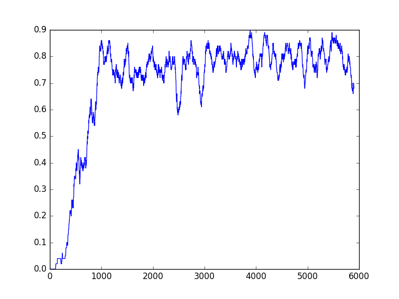
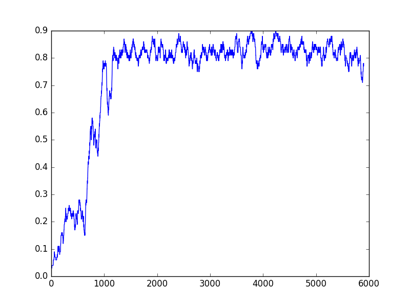
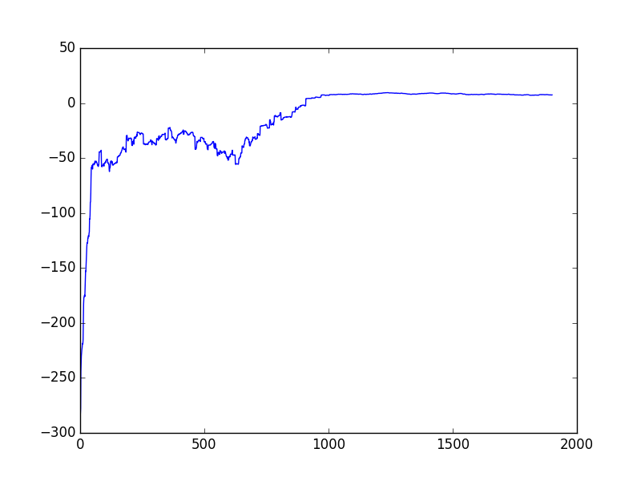

I used a list of probabilities to represent the Q function, where the indexes corresponds to the direction
to take.
Yes, because the e-greedy policy has some inherent randomness it will explore different paths that may
yeild a better Q function. There is a trade off between exploration/explotation, and it's usually a smart idea to
have a bit of both. A greedy policy only does explotation (choosing the best action based on current knowledge,
which might get stuck at local optimums.
The accuumulated quantity is the expected long term reward for taking action south in state s
(Q(s, South)). Using these quantities for to make better estimates is the basis of value based Q learning, where
the policy of choosing next action is based on the expected long term value of taking that action. If we follow
a greedy policy we still can make better estimates, but as previously mentioned no exploration of seemingly
suboptimal paths are tried out.
Exercise 3
Demo.

Ex 3. Average reward over 100 episodes.
Exercise 4
This is whats known as State-Action-Reward-State-Action (SARSA). This is on-policy learning, meaning that the Q
function is updated based on the current policy used instead of the maximum future value.

Ex 4. Average reward over 100 episodes.
Exercise 6
Yes, and I would use an off-policy to train the agent. The exploration policy would necessarily be the one used by the
human operators, and updating the Q values with the max future value. Not knowing anything about the policy used
by the operators it could be the case that it is either strictly greedy or just has no randomness/variance, which
would make off or on-policy the same thing (if there is only one action tried out).
Exercise 7
I used a list of lists, one list for each state containing the current estimated long term rewards for each action.

Ex 7. Average reward over 100 episodes.